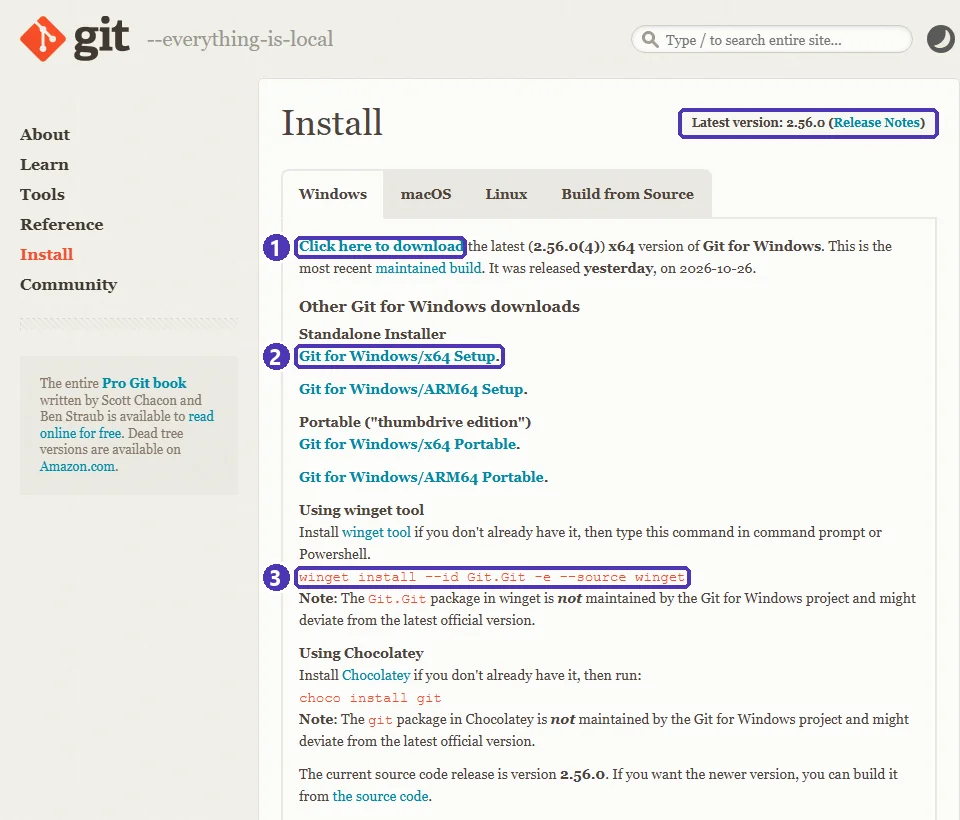
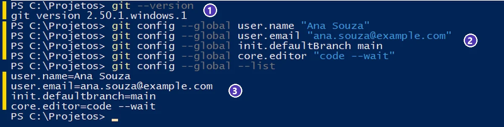

01 — Git e GitHub: conceitos, conta e instalação¶
Curso: Python para Desktop
Módulo: 06 — Git & GitHub (bônus)
Tempo estimado: 1 h 30 min
🎯 Objetivos¶
Ao final desta aula, você será capaz de:
- Explicar o que é controle de versão e a diferença entre Git e GitHub.
- Reconhecer as palavras do dia a dia: repositório, commit, histórico, remoto, push e pull.
- Criar uma conta no GitHub com segurança (verificação em duas etapas).
- Instalar o Git no Windows e conferir a versão.
- Fazer a configuração inicial do Git: nome, e-mail, nome da branch principal e editor.
Pré-requisitos¶
- Módulo 00 — VS Code e ambiente: abrir o terminal no VS Code.
- Um e-mail que você acessa (o seu ou o da escola).
📍 Por que versionar?¶
Você já viu (ou fez) isto:
sistema_escolar.zip
sistema_escolar_v2.zip
sistema_escolar_final.zip
sistema_escolar_final_AGORA_VAI.zip
sistema_escolar_final_corrigido_joao.zip
Qual é a versão certa? O que mudou entre uma e outra? Quem mexeu? E se o colega e você editaram o mesmo arquivo ao mesmo tempo?
Um sistema de controle de versão responde essas perguntas. Em vez de copiar a pasta, você registra pontos de salvamento do projeto, cada um com data, autor e uma frase dizendo o que mudou. Dá para ver o histórico, comparar versões, voltar atrás e juntar o trabalho de várias pessoas.
Git e GitHub não são a mesma coisa¶
| Git | GitHub | |
|---|---|---|
| O que é | Um programa de controle de versão | Um site (serviço na nuvem) que guarda repositórios Git |
| Onde roda | No seu computador | Na internet |
| Precisa de internet? | Não | Sim |
| Para que serve | Registrar e consultar o histórico do projeto | Guardar uma cópia na nuvem, trabalhar em equipe, publicar o portfólio |
| Alternativas | — (o Git é o padrão) | GitLab, Bitbucket, Codeberg |
O Git foi criado em 2005 por Linus Torvalds, o criador do Linux, e hoje é usado em praticamente todas as empresas de software. O GitHub é o serviço mais usado para guardar projetos Git — e é lá que recrutadores costumam olhar o portfólio de quem está começando.
flowchart LR
subgraph PC["💻 Seu computador"]
A["Pasta do projeto"] -->|"commit"| B[("Repositório Git<br/>(histórico)")]
end
subgraph NUVEM["☁️ GitHub"]
C[("Repositório remoto")]
end
B -->|"push (enviar)"| C
C -->|"pull (baixar)"| BAs palavras que você vai usar o tempo todo¶
| Palavra | O que é | Comparação |
|---|---|---|
| Repositório (repo) | A pasta do projeto mais o histórico guardado pelo Git | O caderno com todas as versões |
| Commit | Um ponto de salvamento, com autor, data e mensagem | Uma foto do projeto naquele momento |
| Histórico | A lista de commits, do mais novo ao mais antigo | O álbum de fotos |
| Remoto | A cópia do repositório em outro lugar (no GitHub) | A cópia do caderno guardada na escola |
| Push | Enviar os seus commits para o remoto | Levar as fotos novas para a escola |
| Pull | Trazer os commits do remoto para o seu computador | Buscar as fotos que os colegas tiraram |
| Branch | Uma linha de trabalho paralela | Um rascunho que depois entra no caderno (aula 05) |
Git funciona sem internet
Commits, histórico e comparação de versões acontecem no seu computador. A internet só entra quando você quer enviar (push) ou baixar (pull) do GitHub.
Passo 1 — Criar a conta no GitHub¶
- Acesse github.com ➔ Sign up.
- Informe o e-mail, crie uma senha forte e escolha o nome de usuário.
- Confirme o e-mail com o código que o GitHub envia.
Idade mínima e dados pessoais
Os termos do GitHub exigem 13 anos ou mais (ou a idade mínima do seu país, se for maior). Se você é menor de idade, combine com o professor e com os responsáveis antes de criar a conta. O que você publica em um repositório público fica visível para qualquer pessoa: nunca coloque endereço, telefone, documentos ou senhas.
Nome de usuário: ele aparece no endereço do seu perfil (github.com/seu-usuario) e em todos os seus projetos. Prefira algo simples e profissional — o seu nome ou uma variação (ana-souza, anasouza-dev), e não xX_gamer_2010_Xx.
Verificação em duas etapas (2FA)¶
O GitHub exige a verificação em duas etapas de quem contribui com código. Além da senha, você confirma o login com um código que muda a cada 30 segundos.
- Configure em foto do perfil ➔ Settings ➔ Password and authentication ➔ Enable two-factor authentication.
- O método recomendado é um aplicativo autenticador no celular (Google Authenticator, Microsoft Authenticator, 2FAS...). O GitHub mostra um QR code; você lê com o app e digita o código.
- Guarde os códigos de recuperação (recovery codes) que o GitHub mostra no fim: são a única forma de entrar se você perder o celular. Imprima ou anote em papel e guarde em casa.
Código por e-mail não é 2FA
Receber um código no e-mail não conta como verificação em duas etapas para o GitHub. Use o app autenticador (e, se quiser, o app GitHub Mobile ou uma chave de segurança como reserva).
E-mail privado nos commits¶
Cada commit grava o e-mail do autor, e em repositórios públicos qualquer pessoa pode vê-lo. Para não expor o seu e-mail:
- Settings ➔ Emails ➔ marque Keep my email addresses private.
- Logo abaixo, o GitHub mostra o seu e-mail privado, no formato
número+seu-usuario@users.noreply.github.com. Copie exatamente como aparece: é ele que você vai usar no Passo 4.
Nunca invente o número do e-mail noreply
O número antes do + é o ID da sua conta. Se você inventar um número (12345678+...), ele pode ser o ID de outra pessoa — e os seus commits aparecem no GitHub com o nome e a foto dela. Copie o e-mail da página Settings ➔ Emails.
Passo 2 — Instalar o Git no Windows¶
Escolha um dos caminhos.
No terminal do VS Code (ou no PowerShell), rode o comando indicado no site oficial:
Aceite os termos se o winget perguntar e espere terminar. Depois, feche e abra o terminal de novo — o terminal antigo não “enxerga” programas instalados depois que ele abriu.
Sobre o pacote do winget
O próprio site do Git avisa que o pacote do winget não é mantido pelo projeto Git para Windows e pode chegar com alguns dias de atraso em relação à versão mais nova. Para a aula, tanto faz.
- Acesse git-scm.com ➔ Install ➔ Windows e baixe o Git for Windows/x64 Setup.
- Execute o instalador. Pode aceitar quase tudo como vem (Next), com atenção a duas telas:
- Choosing the default editor used by Git: escolha Use Visual Studio Code as Git's default editor.
- Adjusting the name of the initial branch in new repositories: escolha Override the default branch name for new repositories e deixe main.
- Install ➔ Finish.


winget. Baixe sempre do site oficial.Conferir a instalação¶
Num terminal novo:
Deve aparecer algo como git version 2.56.0.windows.1 — o número muda a cada atualização, e qualquer versão recente serve para o curso. Se aparecer “git” não é reconhecido como nome de cmdlet..., feche o VS Code inteiro e abra de novo; se continuar, reinstale.
Passo 3 — Por que configurar o Git?¶
Todo commit guarda quem fez. Antes do primeiro commit, o Git precisa saber o seu nome e o seu e-mail — se você pular este passo, ele recusa o commit com o aviso “Please tell me who you are”.
A configuração com --global vale para todos os projetos do seu usuário no computador; você faz uma vez só.
Passo 4 — A configuração inicial¶
No terminal, um comando por vez (troque pelos seus dados):
git config --global user.name "Ana Souza"
git config --global user.email "o-email-que-voce-copiou@users.noreply.github.com"
git config --global init.defaultBranch main
git config --global core.editor "code --wait"
| Comando | O que configura |
|---|---|
user.name |
O nome que aparece nos seus commits. Use o seu nome real. |
user.email |
O e-mail dos commits. Use o e-mail privado do GitHub (Passo 1) ou o mesmo e-mail da conta. |
init.defaultBranch main |
Repositórios novos começam com a branch main — o mesmo nome que o GitHub usa. |
core.editor "code --wait" |
Quando o Git precisar que você escreva uma mensagem longa, ele abre o VS Code (e espera você fechar a aba). |
Confira o que ficou gravado:


--list. Se um valor saiu errado, é só rodar o comando de novo com o valor certo. (No exemplo, um e-mail fictício: example.com é reservado para exemplos. Use o seu.)Computador da escola ou compartilhado
Em um computador que outras pessoas usam, a configuração --global fica no usuário do Windows. Se o laboratório usa um usuário só para todo mundo, confira o user.name antes de começar (git config --global user.name) — senão os seus commits saem com o nome do colega.
Equivalentes: Linux, macOS e GitHub Codespaces
| Tarefa | Linux (Ubuntu/Debian) | macOS | Codespaces (no navegador) |
|---|---|---|---|
| Instalar o Git | sudo apt install git |
xcode-select --install ou brew install git |
Já vem instalado |
| Configurar | Os mesmos git config --global |
Os mesmos git config --global |
Nome e e-mail vêm da conta do GitHub |
⚠️ Erros comuns¶
- “git” não é reconhecido — o terminal foi aberto antes da instalação. Feche e abra de novo (às vezes, o VS Code inteiro).
- “Please tell me who you are” ao fazer o primeiro commit — faltou o Passo 4. Rode os dois primeiros
git config --globale tente de novo. - Commits aparecem no GitHub sem a sua foto, como outra pessoa — o
user.emailnão é nenhum e-mail da sua conta. Use o e-mail da conta ou onoreplydo Passo 1. - Errou o nome com aspas faltando (
git config --global user.name Ana Souzagrava só “Ana”) — nomes com espaço precisam de aspas. Rode de novo com aspas. - Perdeu o celular do 2FA e não guardou os códigos de recuperação — você pode perder a conta. Guarde os recovery codes no dia em que ativar.
Exercícios¶
Básico (fixação)¶
Responda com as suas palavras:
- Qual é a diferença entre Git e GitHub?
- O que é um commit? Quais informações ele guarda?
- Dá para fazer commits sem internet? E
push?
Gabarito — Básico
- O Git é um programa que roda no seu computador e registra o histórico do projeto. O GitHub é um site que guarda uma cópia do repositório na nuvem e permite trabalhar em equipe e publicar. Dá para usar o Git sem o GitHub; o contrário, não.
- Um commit é um ponto de salvamento do projeto. Ele guarda o que mudou, o autor (nome e e-mail do
git config), a data e hora e a mensagem que explica a mudança. - Commits, sim: acontecem no seu computador. O
push, não: ele envia os commits para o GitHub, então precisa de internet.
Intermediário (aplicação)¶
- Instale o Git (se ainda não tiver) e mostre a versão.
- Faça a configuração inicial completa: nome, e-mail, branch
maine VS Code como editor. - Mostre a lista de configurações e confira cada valor.
Gabarito — Intermediário
winget install --id Git.Git -e --source winget # se ainda não tiver o Git
# feche e abra o terminal
git --version
git config --global user.name "Seu Nome"
git config --global user.email "seu-email-ou-noreply@users.noreply.github.com"
git config --global init.defaultBranch main
git config --global core.editor "code --wait"
git config --global --list
Confira: a lista mostra user.name, user.email, init.defaultbranch=main e core.editor=code --wait. (O Git mostra o nome das opções em letras minúsculas: defaultbranch.) Para ver um valor só: git config --global user.email.
Avançado (desafio)¶
- Crie a conta no GitHub (se puder, conforme a idade), ative a verificação em duas etapas com um app autenticador e guarde os códigos de recuperação.
- Ative o e-mail privado e configure o Git com o e-mail
noreply. - Explique por que o
user.emaildo Git precisa ser um e-mail ligado à sua conta do GitHub.
Gabarito — Avançado
- Sign up ➔ confirmar o e-mail. Settings ➔ Password and authentication ➔ Enable two-factor authentication ➔ ler o QR code com o app ➔ digitar o código de 6 dígitos ➔ baixar ou anotar os recovery codes ➔ concluir.
- Settings ➔ Emails ➔ Keep my email addresses private ➔ copiar o e-mail
...@users.noreply.github.com➔ no terminal:git config --global user.email "o-email-copiado". - O GitHub liga cada commit a uma conta pelo e-mail gravado no commit. Se o e-mail não pertence a nenhuma conta, o commit aparece sem foto e não conta nas suas contribuições do perfil. Com o
noreply, o commit é ligado à sua conta e o seu e-mail real não fica público.
Dica de professor: se a escola usa contas do GitHub Education, combine com a turma qual e-mail usar — o da escola facilita conferir as entregas.
💡 Resumo¶
- Git = histórico no seu computador; GitHub = cópia na nuvem, equipe e portfólio.
- Commit é um ponto de salvamento com autor, data e mensagem; push envia, pull traz.
- Conta no GitHub: 13 anos ou mais, nome de usuário profissional, 2FA com app e códigos de recuperação guardados.
- Instale pelo
wingetou pelo site oficial e confira comgit --version. - Configure uma vez:
user.name,user.email,init.defaultBranch mainecore.editor "code --wait".
➡️ Próximo passo¶
02 — Primeiro repositório: status, add, commit e histórico: criar um repositório, fazer os primeiros commits e voltar no tempo.